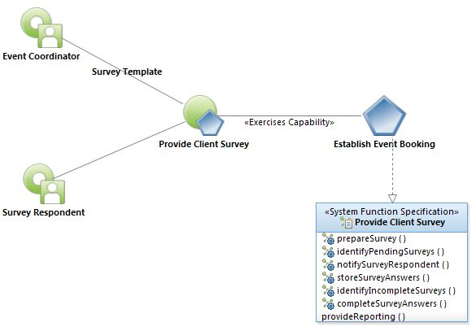
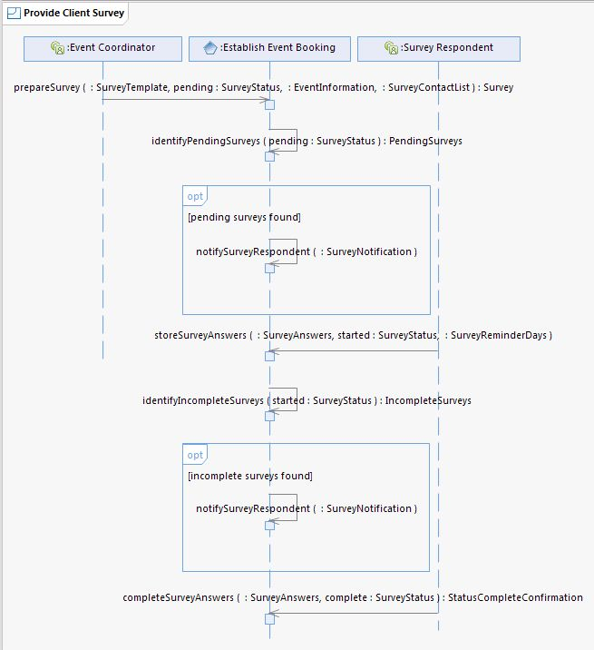
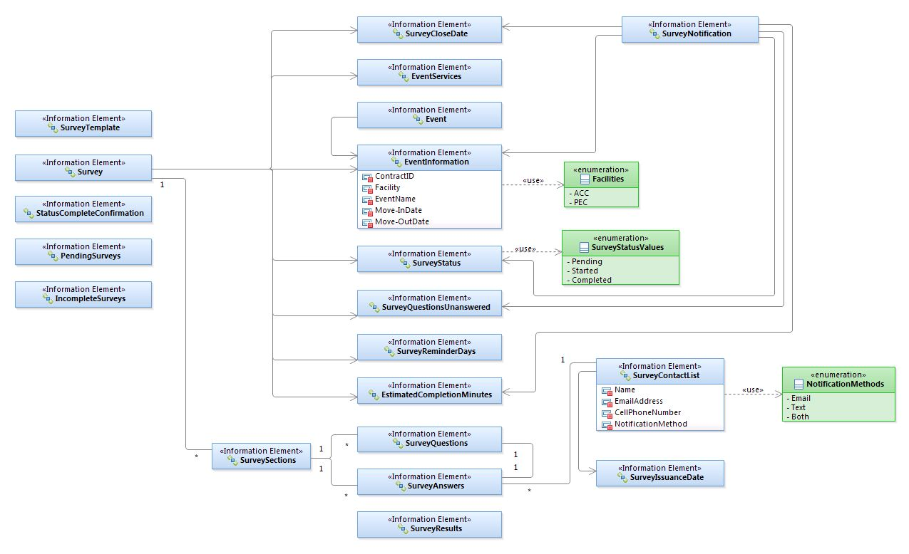

|
Provide
Client Survey Use Case Specification
Select to
enlarge...

Provide Client Survey Use
Case Model
|
Scope: The Event Coordinator uses the system to prepare the Survey
for an Event. Using a SurveyTemplate (initially configured in cooperation
with a User Experience Professional), the Event Coordinator generates the new
Survey, includes EventInformation, a SurveyCloseDate and indicates the approved
SurveyContactList is ready for import. At an interval predefined during system
configuration, the system imports the approved SurveyContactList and the Survey
is made ready. On the specified SurveyIssuanceDate, the system sends a
notification to each SurveyRespondent on the SurveyContactList, using the
designated NotificationMethod (Email, Text, Both). The SurveyNotification
greets the SurveyRespondent by their Name and invites them to participate in
the Survey for a specified Event and states the SurveyCloseDate. The
SurveyRespondent selects a Uniform Resource Locator (URL) contained within the
SurveyNotification and is asked whether they grant permission for their
responses to be published for marketing purposes. The Survey then asks which
services the SurveyRespondent utilized during the Event. Based upon these
selections, the Survey expands or contracts to only show relevant questions to
the SurveyRespondent and the estimated minutes to complete the Survey are
adjusted. The Survey is wizard-driven and as the SurveyRespondent moves from
one screen to another the system stores their SurveyAnswers. If the
SurveyRespondent leaves the Survey prior to completing it, they are presented
with an option to set a number of SurveyReminderDays in which to be reminded to
complete the survey. At specified intervals, the system runs a scheduled task
upon itself to search for IncompleteSurveys. For every IncompleteSurvey, the
system sends a SurveyNotification to the SurveyRespondent. The
SurveyNotification includes a message, greeting the SurveyRespondent by their
Name and reminding them to complete the Survey for a specific Event, states the
SurveyCloseDate and contains a Uniform Resource Locator (URL) unique to the
SurveyRespondent. When the SurveyRespondent has answered all of the
SurveyQuestions to their level of satisfaction, the SurveyRespondent clicks a
button to complete the Survey and submit all SurveyAnswers to the system. The
system presents a message to the SurveyRespondent, stating the Survey has been
completed and thanks them for their feedback.
Select to
enlarge...

Provide Client
Survey Sequence Diagram |
Table of
Interface Descriptions
FS#
|
Type/Interface |
Description |
FS001
|
Establish Event Booking/
prepareSurvey
|
The Event Coordinator uses the system to prepare the Survey
for an Event. SurveyTemplates are initially configured in advance and the
SurveyTemplates are designed in cooperation with User Experience (UX)
Consultant. Using the SurveyTemplate, the Event Coordinator generates a new
Survey, includes EventInformation (Event ContractID, EventName, Move-InDate and
Move-OutDate, etc.), enters a SurveyCloseDate (the date on which the Survey will
close and restrict participation) and indicates the approved SurveyContactList
is ready for import from the Event Booking System Web Service. The
SurveyContactList includes (but is not limited to) the following information:
SurveyIssuanceDate, Name, EmailAddress, CellPhoneNumber and NotificationMethod
(Email, Text, Both). At an interval predefined during system configuration, the
system imports the approved SurveyContactList and the Survey is made ready.
|
FS002
|
Establish Event Booking/
identifyPendingSurveys |
At an interval predefined during system configuration, the
system runs a scheduled task upon itself to search for PendingSurveys by
searching for the SurveyStatus of 'Pending'. The system provides the option of
configuring one or more interval triggers. (eg. Every 14 Days, twice annually)
|
FS003
|
Establish Event Booking/
notifySurveyRespondent |
If PendingSurveys are found by the system and the current
date is on or after the SurveyIssuanceDate, the system sends a
SurveyNotification to all SurveyRespondents on the SurveyContact List. (NOTE:
The SurveyIssuanceDate is predetermined by a setting in the Event Booking
System of a number of days following the Move-OutDate of the Event.) The
SurveyNotification states how many questions are contained within the survey as
well as the amount of EstimatedCompletionMinutes. If IncompleteSurveys are
found, the system sends a SurveyNotification to the SurveyRespondent reminding
them to complete the Survey for a specific Event and states the number of
SurveyQuestionsUnanswered with EstimatedCompletionMinutes. The system sends a
SurveyNotification to the SurveyRespondent using the desired NotificationMethod
(Email, Text, Both). Email notifications are of a responsive format viewable
from mobile devices and desktop computers. The SurveyNotification greets the
SurveyRespondent by name and invites the SurveyRespondent to participate in the
Survey for a specific Event (using the EventName and Move-InDate). The
SurveyNotification includes the SurveyCloseDate, the date on which the Survey
will be closed and participation will be blocked. The SurveyNotification may
contain an optional statement telling the SurveyRespondent they will receive a
gift card for completing the Survey. Finally, the notification contains a
Uniform Resource Locator (URL) unique to the SurveyRespondent.
|
FS004
|
Establish Event Booking/
storeSurveyAnswers |
The SurveyRespondent selects the Uniform Resource Locator
(URL) contained within the SurveyNotification and is asked whether they grant
permission for their responses to be published for marketing purposes (eg.
comments may be used in whole or part on the Austin Convention Center website
or other marketing materials: 'Best conference i ever had! - John Doe'). The
Survey next asks what EventServices were utilized by the SurveyRespondent.
Based upon the selection of EventServices, the Survey expands or contracts to
only show relevant SurveyQuestions, the EstimatedCompletionMinutes value is
adjusted accordingly and the SurveyStatus is change from Pending to Started.
The Survey allows for bridging and skipping, based upon answers chosen (eg.
answering one question indicates that the SurveyRespondent may skip over the
next block of questions). The Survey contains one or more SurveySections. Each
SurveySection contains one or more SurveyQuestions. The SurveyQuestions have
the option of being multiple choice questions along with fields for the
SurveyRespondent to provide feedback in their own words. Multiple choice
question types include (but are not limited to): Choose all that apply, Choose
one, Choose one from a scale (eg. 1-5). The SurveyRespondent provides
SurveyAnswers. The Survey is wizard-driven and as the SurveyRespondent moves
from one page to another the system stores their SurveyAnswers. Each screen of
the Survey contains a progress bar, indicating to the SurveyRespondent where
they are in the process of completing the Survey. The SurveyRespondent has the
ability to move forward or backward in the Survey at any time. If the
SurveyRespondent leaves the Survey prior to completing it, they are presented
with an option to set a number of SurveyReminderDays in which to be reminded to
complete the survey. (eg. Send me a notification in X days with a reminder to
complete the survey). The SurveyRespondent may continue taking the survey at a
later time from any device.
|
FS005
|
Establish Event Booking/
identifyIncompleteSurveys |
At an interval predefined during system configuration, the
system runs a scheduled task upon itself to search for IncompleteSurveys by
searching for the SurveyStatus of 'Started.' The system provides the option of
configuring one or more interval triggers. (eg. Every 14 Days, twice annually)
|
FS006
|
Establish Event Booking/
notifySurveyRespondent |
If PendingSurveys are found by the system and the current
date is on or after the SurveyIssuanceDate, the system sends a
SurveyNotification to all SurveyRespondents on the SurveyContact List. (NOTE:
The SurveyIssuanceDate is predetermined by a setting in the Event Booking
System of a number of days following the Move-OutDate of the Event.) The
SurveyNotification states how many questions are contained within the survey as
well as the amount of EstimatedCompletionMinutes. If IncompleteSurveys are
found, the system sends a SurveyNotification to the SurveyRespondent reminding
them to complete the Survey for a specific Event and states the number of
SurveyQuestionsUnanswered with EstimatedCompletionMinutes. The system sends a
SurveyNotification to the SurveyRespondent using the desired NotificationMethod
(Email, Text, Both). Email notifications are of a responsive format viewable
from mobile devices and desktop computers. The SurveyNotification greets the
SurveyRespondent by name and invites the SurveyRespondent to participate in the
Survey for a specific Event (using the EventName and Move-InDate). The
SurveyNotification includes the SurveyCloseDate, the date on which the Survey
will be closed and participation will be blocked. The SurveyNotification may
contain an optional statement telling the SurveyRespondent they will receive a
gift card for completing the Survey. Finally, the notification contains a
Uniform Resource Locator (URL) unique to the SurveyRespondent.
|
FS007
|
Establish Event Booking/
completeSurveyAnswers |
When the SurveyRespondent has answered all of the
SurveyQuestions to their level of satisfaction, the SurveyRespondent clicks a
button to complete the Survey and submit all answers to the system. The system
presents a StatusCompleteConfirmation message to the SurveyRespondent and
thanks them for their feedback. If the SurveyRespondent is to receive a gift
card for providing their feedback, the message may also include a statement of
when the gift card may be expected. Once the SurveyStatus has been changed to
Complete, the SurveyRespondent may no longer edit the SurveyAnswers. The system
has the option to enable an email notification to designated recipients when a
Survey is completed by a SurveyRespondent. This notification has the option to
occur individually on demand or at a designated interval containing a batched
list of Surveys that were completed the previous day.
|
Table of Supplemental Specifications
SS#
|
Type/Interface |
Description |
| SS001 |
Establish Event Booking/
provideReporting |
The system provides access to SurveyResults by means of
customizable reports. Users of the system have the ongoing ability to create
reports using a point-and-click method and include or exclude information of
any type (eg. irrelevant or inappropriate comments). Reports have the option of
being stored for subsequent execution. The system contains one or more reports
(created initially in cooperation with the vendor) inclusive of all data for a
particular survey. These reports are established for purposes of auditing and
are also stored for subsequent execution; however, may not be modified by any
user, to ensure the integrity of audits are protected.
|
Provide Client Survey Logical Data Model
Select to
enlarge...

|
{kind=link}
{kind=link}
{kind=link}
{kind=link}
{kind=link}